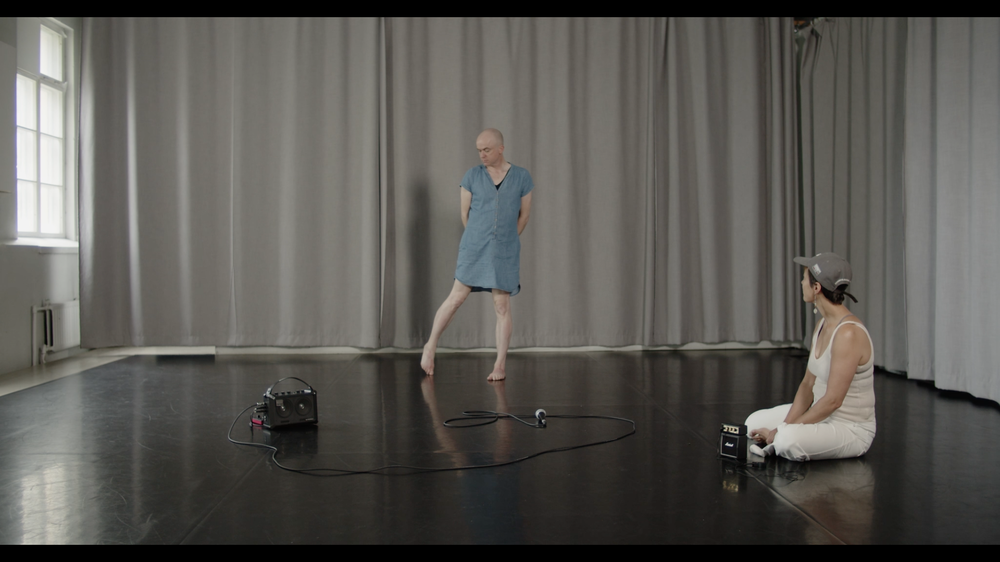
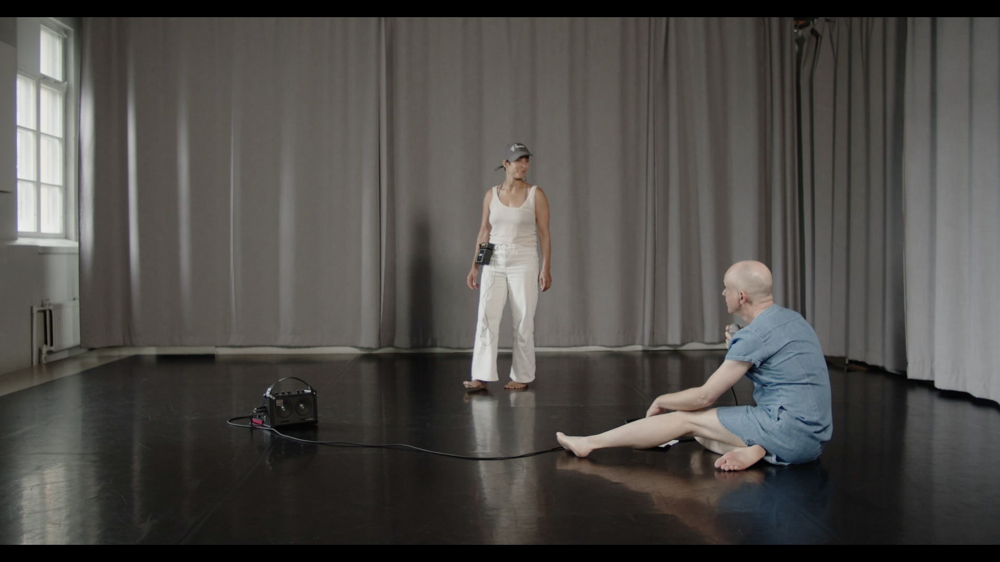
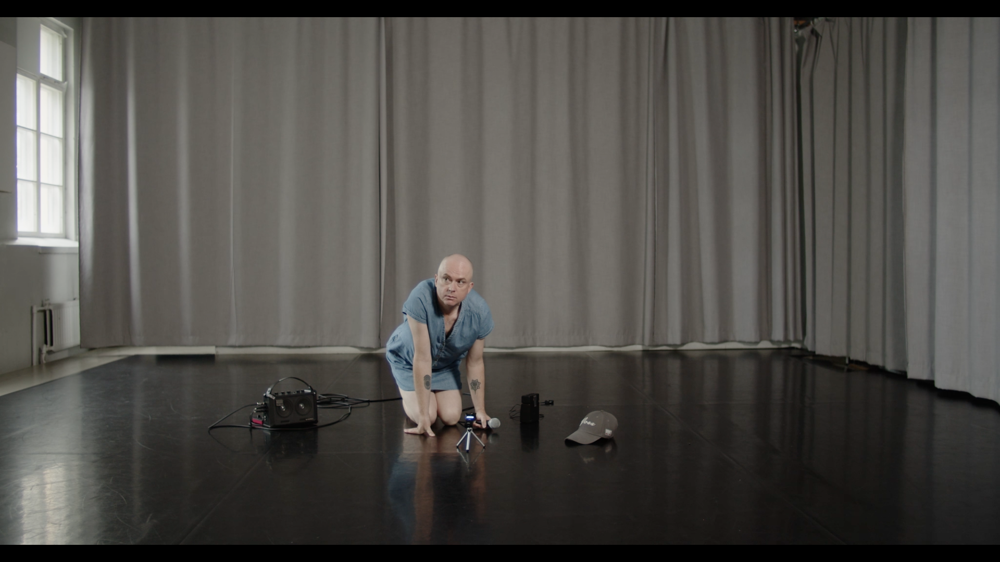
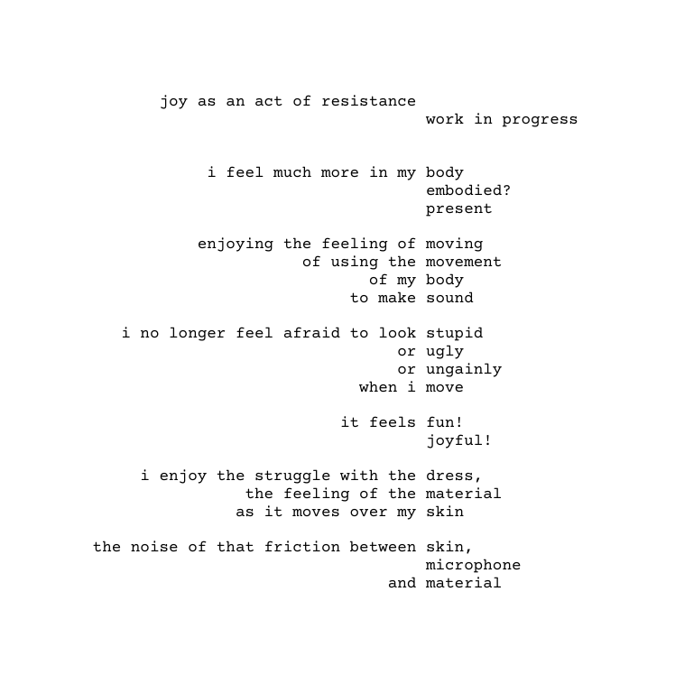

Work in Progress
Trans and Queer Joy as an Act of Resistance, 2024-



Dance/sound: Ruby Louise Rose
Dance/sound: Nadja Pärssinen
Documentation: Hannu Karjalainen
Video documentation was shown on Titanik’s artelaiset wall throughout July, 2024.
Texture and Timbre, 2024-
Two happy childhood memories: shopping for dress fabric with my mother, the seamstress; and disco dancing lessons with my sister. Both were considered too girly for a young boy growing up in the North East of England during the 1970s. Returning to them now, as a trans woman in her 50s, I see them as a starting point: a way to use texture and movement to explore and express the joy, pleasure and liberation of transitioning into the body I want to inhabit.As a man, I hated shopping for clothes, but as a trans woman, I’ve discovered the tactile thrill of picking out dresses and tops, with all their different shapes, colours and, most importantly, textures: textures that take me right back to being surrounded by giant rolls of fabric in the Dress Fabric Department of Bainbridge’s Department Store in Newcastle upon Tyne.
The words we use to describe the texture of a fabric are the same words we use to describe the texture, or timbre, of a sound: rough, smooth, dull, shiny, soft, blurry, delicate, scratchy, and so on.
As a sound artist, I use a microphone to capture the world around me. Could I, by simply running a microphone over, say, a scratchy woollen dress, capture the texture of the fabric in the texture, the timbre, of the resulting scratchy sound? Could that scratchy sound somehow convey the tactile thrill of trying on that scratchy woollen dress for the first time?
I first met the queer choreographer/dancer Nadja Pärssinen in 2021, when they employed me as a sound designer for a dance piece they were choreographing. As our working relationship progressed and became more of a collaboration, we began to think more and more about how our sound art and movement practices could overlap and combine.
Wanting a more physical, movement-based approach to my practice, I began to use my body as a sound source for Nadja to respond to with movement. By simply tapping, thumping, slapping and stroking, I could create a whole world for Nadja to inhabit.
I soon realised that this could also be a way to document, through sound, the changes my body will go through as my transition continues and I begin to take hormones; a way to express the joy I will feel as my body finally begins to align with my sense of self. Will the sounds I make with my body change as my body changes: from hard to soft, rough to smooth, straight to curved?
By documenting my transition through texture and timbre, I hope to create a trans sound world for others to respond to and inhabit, a world full of joy, pleasure and liberation.
for Bob, 2024-